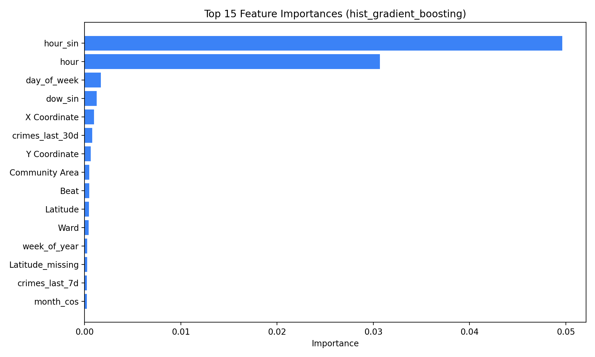
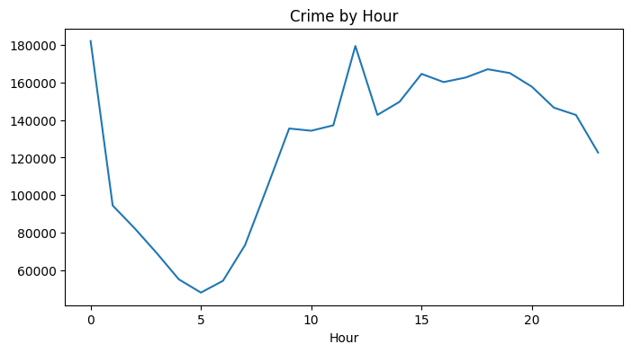

From Raw Records to Model Inputs
After EDA, we did not feed raw crime records directly into the models. We first transformed them into structured, model-ready inputs.
Temporal features
- hour
- day of week
- cyclical encodings
- week / month signals
Spatial features
- district
- ward and beat
- community area
- coordinates when available
Historical features
- crime counts in last 7d
- last 14d
- last 30d
- last 90d
Why this step matters
This preprocessing stage converts observational crime data into structured inputs that the models can compare fairly and interpret more clearly.
Pipeline logic
So the logic is: EDA reveals meaningful patterns, feature engineering converts them into inputs, and then model benchmarking tests which method learns those patterns best.
Why These Four Models?
We chose one linear baseline, one single-tree nonlinear model, and two ensemble methods so that our comparison is methodologically fair and easy to explain.
Best Performance Is Real, but the Margin Is Modest
Main takeaway
HistGradientBoosting is the strongest overall benchmark, but the gap over Random Forest is small. So we present this as a careful benchmark win, not a dramatic breakthrough.
Why this is defensible
The comparison uses the same feature pipeline and chronological split for all four models, so the ranking reflects model behavior rather than inconsistent evaluation setup.
What Drives Predictions?
Feature importance of the best model

The clearest evidence for what the model actually uses: hour, cyclical hour features, district identity, and rolling recent counts.
Hourly crime rhythm

A visible daily cycle explains why temporal features dominate prediction quality.
- Temporal features contribute about 65.9% of grouped permutation importance.
- Historical features contribute about 20.1%.
- Spatial features contribute about 14.0%.
Top signals for HistGradientBoosting are hour, hour_sin, District, crimes_last_30d, and crimes_last_14d.
So the clean interpretation is: timing is the dominant signal, recent local history adds meaningful value, and district identity still helps anchor the model geographically.
NIBRS Generalization Supports Robustness Across Jurisdictions
What this proves
The Chicago-trained model still shows meaningful discrimination on external NIBRS data, so the learned signal is not purely city-specific.
What stays hard
Temporal transfer is much stronger than spatial transfer. This is why we frame the system as a timing-aware decision-support tool rather than a universal hotspot-ranking engine.